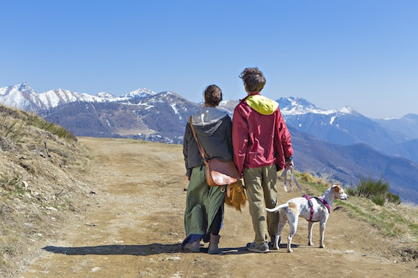

ABOUT US
Introducing Rainy Days, where style meets durability in the great outdoors. Born from a passion for adventure and a love for all things weather, Rainy Days is your go-to destination for jackets that seamlessly blend fashion and function.
Our jackets are more than just a piece of clothing; they're your trusty companion in every weather twist and turn. Crafted with precision and designed with the adventurous spirit in mind, Rainy Days jackets ensure you stay comfortable, no matter what Mother Nature throws your way.
We understand that outdoor enthusiasts come in all shapes, sizes, and preferences. That's why our collection caters to both men and women aged 30 to 50, who find joy in exploring the wonders of nature. Whether you're hiking up a mountain, skiing down slopes, setting up camp, or paddling through serene waters, Rainy Days has you covered—literally.
Our jackets boast not only style but also the durability to withstand the elements. From rain showers to chilly winds, you can trust Rainy Days to keep you warm and dry, allowing you to focus on the adventure at hand. After all, the best memories are made when you're comfortable and ready for whatever nature has in store.
Join Us at Rainy Days, where we believe that every day is an opportunity for a new adventure, and every adventure deserves the perfect jacket.